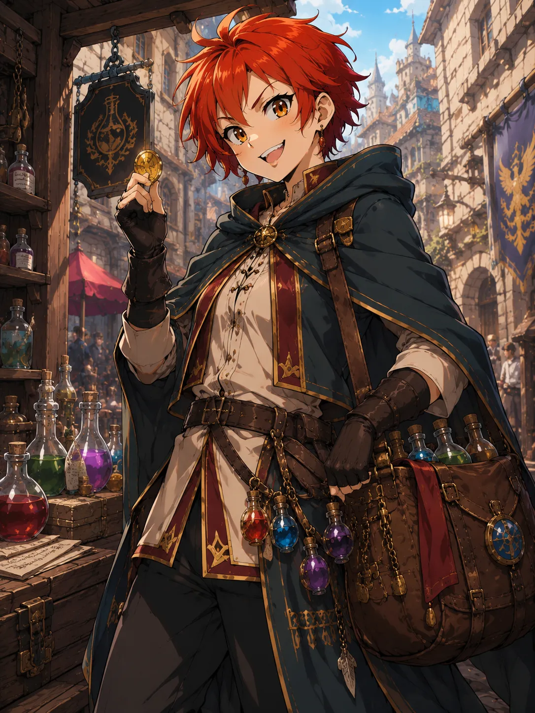
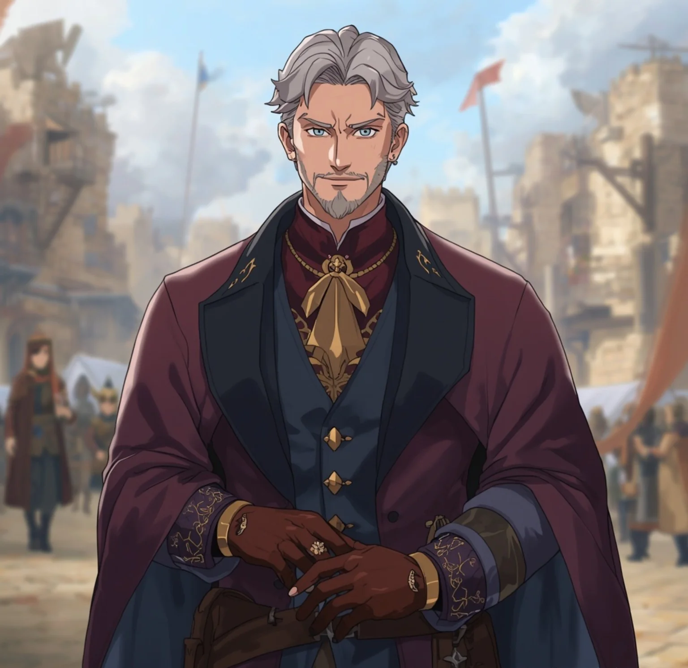
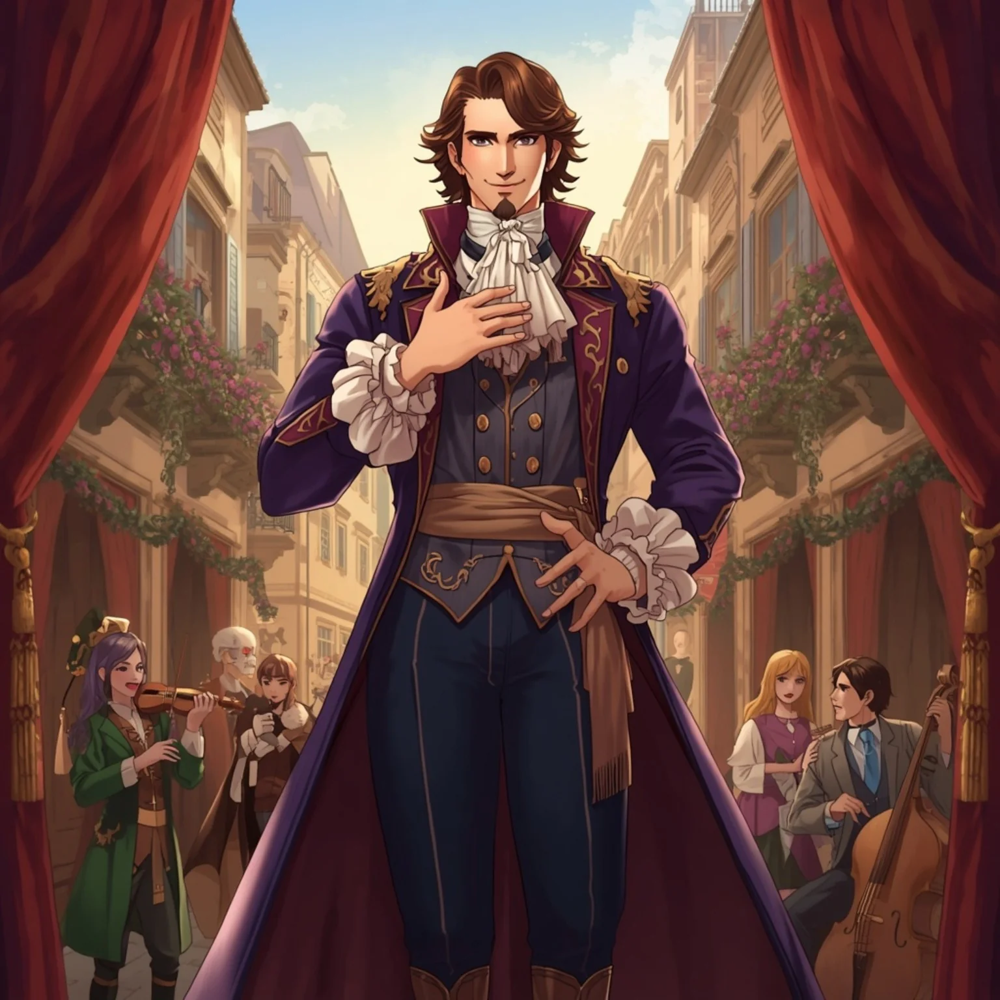

Gruppo 1 · Avventura 9 · Campagna a gruppo unico
La Strada per Chansonne
Terza avventura del Ciclo degli Eterni · Versione revisionata
Sinossi per il Master
Dopo la difesa e l'evacuazione di Mairesa, i personaggi accompagnano i sopravvissuti fino a Fortevento. Qui ritrovano la sicurezza, possono riposare ed esplorare una città viva, incontrare Dany Fogliarossa e svolgere piccoli incarichi non obbligatori. Volpe Scura assume personalmente la responsabilità delle indagini su Mairesa. Cinque profughi originari del Silverdown non hanno parenti a Nuovaconcezione: Lord Valemont Gustblade organizza e finanzia il loro ritorno, offrendo ai PG un passaggio e un contatto con la regina Marlene Stormblade, sorella di Pardisan, destinatario del messaggio che portano. Il viaggio verso Chansonne è tranquillo e sorvegliato dagli Irregolari. La città delle arti offre una nuova parentesi di esplorazione; il Primo Armonizzatore Faurellon chiede loro di indagare sui fumi verdi e sulle rovine delle Valli del Fuoco. L'avventura si chiude prima della partenza.
Parte I — Cinque giorni fino a Fortevento
La strada alle vostre spalle si perde lentamente nella foschia. I carri avanzano piano, tra passi stanchi, ruote che scricchiolano e sguardi che tornano verso Mairesa. Per la prima notte nessuno riesce davvero a dimenticare ciò che è accaduto.
Dopo circa un giorno e mezzo incontrate finalmente una pattuglia di Irregolari. I soldati ascoltano il vostro rapporto, controllano i feriti e assicurano che altre pattuglie sorvegliano la strada. Per la prima volta la sicurezza della colonna non dipende soltanto da voi.
Nei giorni seguenti incontrate altri uomini e donne degli Irregolari. La tensione si allenta. Nel pomeriggio del quinto giorno, davanti a voi compaiono le mura di Fortevento.
Per il Master. Il viaggio dura cinque giorni complessivi. Non occorre giocare ogni giornata: evidenziare il passaggio dalla paura alla fiducia. Il rapporto sulla caduta di Mairesa viene già consegnato alla prima pattuglia e precede i personaggi. Kasumi rimane taciturna e rabbuiata, ancora segnata dalla perdita di Tetsuya.
Parte II — Fortevento e il rapporto
Fortevento non ostenta ricchezze. Le mura robuste, i portoni rinforzati e le insegne degli Irregolari parlano di una città costruita per resistere. Ma dentro, fra botteghe e mercati, la vita continua. I profughi cominciano a riconoscere volti, chiamare nomi, correre incontro a parenti che li credevano perduti. I carri si svuotano. Qualcuno piange; altri ridono senza riuscire a fermarsi.
Quasi tutti i sopravvissuti di Mairesa ritrovano familiari a Fortevento. Fanno eccezione cinque persone provenienti dal Silverdown, fra cui Lord Valemont Gustblade: non hanno parenti né qui né altrove in Nuovaconcezione.
Kasumi e Aurora
Kasumi continua a stare vicino ai PG, anche se essi si mostrano freddi per il marchio degli Eterni. Non forza la loro fiducia: può sistemarsi altrove, ma rimane nei paraggi. Aurora, che le si è molto affezionata durante la fuga, si oppone se il gruppo vuole abbandonarla.
«Il marchio l'ho visto anch'io, ma a Mairesa ha combattuto con noi. Suo padre ci ha chiesto di vegliare su di lei. Se voi non volete, ci resto io.»
Volpe Scura
Volpe Scura ha già ricevuto il primo rapporto. Chiede soltanto i dettagli che i PG possono conoscere in prima persona: le ultime parole di Talarion e Tetsuya, il marchio, la sagoma nella nebbia, la fuga dei civili. La sua domanda più importante è semplice: «Quand'è l'ultima volta che li avete visti?»
La comandante manda ricognitori e, quando giungono notizie della nebbia impenetrabile intorno a Mairesa, prende in carico personalmente la questione con gli Irregolari. Non invia i PG di nuovo nell'assedio.
«Di Mairesa ci occupiamo noi. Me ne occuperò io personalmente. Se scopriremo qualcosa su Tetsuya o Talarion, ve lo farò sapere. Ma non vi chiederò di tornare là dentro.»
Per il Master. Questa decisione deve alleggerire davvero i personaggi dal dovere di investigare subito su Mairesa. Non è un divieto artificiale: Volpe Scura è competente e dispone di uomini, informazioni e autorità.
Parte III — Una tregua in città
Questa sezione è volutamente aperta. Dopo due avventure cupe e serrate, concedere ai giocatori alcuni giorni senza scadenze immediate: mercato, botteghe, addestramenti, conoscenze, recupero e piccole missioni. Nessuna di queste attività deve essere indispensabile alla trama.
Dany Fogliarossa
Dany ha una bottega di rimedi ed erbe. Se conosce già i personaggi, il ritrovarsi può essere caloroso a modo suo: prima le battute sarcastiche, poi il sollievo. Se qualcuno chiede perché sia a Fortevento, può scherzare sulla propria pessima fortuna con le città in pericolo.
«Apro una bottega a Watermire e arrivano i non-morti. Ne apro una qui e adesso mi raccontate di Mairesa. Forse dovrei vendere soltanto rimedi per il malocchio.»
Piccola quest facoltativa — Il conto di Dany
Un mercante non ha ancora pagato Dany per una fornitura di rimedi. Lei chiede ai PG di andare a riscuotere o almeno capire che cosa sia successo. Può trattarsi di un malinteso, di difficoltà economiche o di un debitore furbo: la soluzione non richiede necessariamente uno scontro. Lasciare libertà di negoziare, aiutare o rifiutare l'incarico. Il nome del mercante, il debito e l'esito restano da definire in una successiva revisione.
Per il Master. Non trasformare il soggiorno in un nuovo conto alla rovescia. L'obiettivo è far conoscere Fortevento e consentire ai PG di riprendere fiato.
Parte IV — La proposta di Valemont Gustblade
Lord Valemont Gustblade organizza a proprie spese carri, provviste e viaggio verso Silverdown per sé e gli altri quattro profughi originari della regione. Non impone ai PG la scorta: offre un compenso e una ragione concreta per proseguire insieme.
Se i personaggi ricordano il messaggio da consegnare a Pardisan Stormblade a Yatandra, Valemont coglie l'occasione. Se non lo ricordano, chiede dove intendano dirigersi e può richiamare l'attenzione sul loro incarico. Conosce la regina Marlene Stormblade di Silverdown, sorella di Pardisan: può presentarli a corte e aiutarli a cercare una via più rapida verso Yatandra. Non garantisce un trasporto già disponibile.
«Conosco la regina Marlene Stormblade. È la sorella di Pardisan, non è così? Se ci accompagnerete a Silverdown, potrò presentarvi a lei. Potrebbe aiutarvi a raggiungere Yatandra più rapidamente che tentando il viaggio da soli.»
In questo modo la scorta non è una deviazione dalla missione dei PG: potrebbe esserne la strada migliore. Kasumi e Aurora desiderano proseguire con il gruppo, se i PG lo permettono.
Parte V — La strada sicura per Chansonne
Il triangolo di strade Brickmade–Chansonne–Fortevento è tra i percorsi più sicuri di Nuovaconcezione. Le pattuglie degli Irregolari lo percorrono ogni giorno, e il traffico di mercanti e viaggiatori è frequente. Nessun assalto di costrutti metallici, nessuna imboscata: l'incontro con Sertisicon «la Lancia» viene rimandato all'avventura successiva.
La prima sera, nel buio, si avvicina un rumore di zoccoli. Qualcuno tende istintivamente la mano verso l'arma. Ma sono soltanto Irregolari in pattuglia: salutano, scambiano due parole con i conducenti e proseguono. Il giorno seguente incontrate mercanti, viaggiatori e altri carri. Qui, finalmente, la strada è una strada.
Parte VI — Chansonne, la città delle arti
Le mura color ocra di Chansonne sembrano le quinte di un teatro spalancato. La musica vi raggiunge prima dei cancelli: tamburi, liuti, flauti e cori si inseguono per le vie. Maschere colorate, stoffe, petali, spezie e artisti di strada trasformano ogni piazza in uno spettacolo. È difficile dire dove finisca il mercato e dove cominci la rappresentazione.
Lasciare ai PG tempo per esplorare questa città particolarissima di Ellan, senza trasformarla subito in un altro teatro di guerra. Tomas Brughese, uno degli altri profughi, chiede di fermarsi un paio di giorni per dormire finalmente in un letto e riprendersi prima del viaggio verso Silverdown. Valemont acconsente.
Monsieur Faurellon de Chansonne, Primo Armonizzatore
Faurellon, teatrale e raffinato, accoglie i nuovi arrivati e, dopo un tempo adeguato di riposo, propone loro un incarico. Non agisce su ordine personale di Volpe Scura: ha ricevuto un messaggio dagli Irregolari che descrive i PG come persone estremamente affidabili per incarichi difficili. A Chansonne non ci sono avventurieri disponibili per occuparsene.
«Gli Irregolari mi hanno scritto di voi. Dicono che siete persone affidabili, e che sapete affrontare ciò da cui altri preferirebbero tenersi lontani. Qui non abbiamo avventurieri a cui rivolgerci. E dalle Valli del Fuoco salgono strani fumi verdi: rovine rimaste sepolte per anni sono tornate alla luce. Il vostro aiuto sarebbe più che gradito.»
Faurellon può offrire mappe, provviste e indicazioni. I PG non devono accettare seduta stante; possono godersi Chansonne e decidere quando partire.
Epilogo
Quella sera, dalla terrazza di Chansonne, guardate oltre i tetti e le mura. Dietro di voi la musica continua, allegra e instancabile. In lontananza, sopra le rocce scure, sottili colonne di fumo verde salgono verso il cielo. Per una volta, avete il tempo di scegliere il prossimo passo.
Scena dopo i titoli — Il Consiglio di Ellanor
Scena per i giocatori, non per i personaggi. Sostituisce «La Fiamma che resta». È una finestra sugli eventi lontani, non un'informazione posseduta dai PG.
Ellanor. La sala del consiglio è ampia, armoniosa, perfetta in ogni proporzione. Cinque Ellantil siedono ai loro posti. Due appartengono alla generazione precedente la Lontananza; gli altri tre, consiglieri a vita, sono post-Lontananza.
Fra questi ultimi siede Arderis. Non porta un'insegna che lo proclami sovrano, eppure è evidente che sia lui a guidare la seduta. I due consiglieri pre-Lontananza discutono con misura, talvolta dissentendo persino fra loro. Arderis ascolta e formula la propria posizione. Gli altri due post-Lontananza la sostengono senza esitazione, quasi completandosi le frasi. Il consiglio sembra deliberare, ma la maggioranza è già decisa.
Davanti ai cinque si trova la regina Elizabeth. Alta, dai capelli chiari ordinatamente raccolti e dagli occhi dorati, indossa abiti di raffinata sobrietà. Il suo volto è immobile, la postura impeccabile. Come gli Ellantil post-Lontananza, non lascia trasparire emozioni.
Arderis le rivolge lo sguardo. «Il consiglio può contare ancora sul vostro appoggio?»
Elizabeth china appena il capo. «Mi atterrò alla decisione del consiglio.»
Nessuna esitazione, nessun mutamento d'espressione.
Più tardi, su una terrazza affacciata su Ellanor, Elizabeth osserva la città insieme a Mirana Nagai. Qui la regina è meno rigida: si appoggia alla balaustra, le spalle appena più rilassate, pur conservando quasi intatta l'impassibilità del volto. Mirana, pre-Lontananza, è professionale e composta, ma le sue emozioni sono leggibili nei piccoli gesti e nello sguardo.
«Arderis non sospetta nulla», dice Elizabeth. «Abbiamo ancora tempo.»
Mirana lascia uscire un respiro e accenna un sorriso. «Bene, allora possiamo continuare.»
Per qualche istante tacciono, osservando il panorama della città. Poi le labbra di Mirana si increspano in un sorriso che cerca inutilmente di trattenere.
«Ah, e fra l'altro, una sorpresa per te.»
Si sentono passi veloci. Aelissa corre incontro a Elizabeth e la stringe in un abbraccio. Per un istante la regina resta immobile. Poi le posa una mano sulla schiena e ricambia l'abbraccio. Sul suo volto, rimasto impassibile per tutta la seduta, qualcosa sembra incrinarsi: un tremito appena agli angoli della bocca, quasi un sorriso.
Stacco.
Personaggi dell’avventura — galleria
Seleziona un ritratto per ingrandirlo. Materiale riservato al Master.




